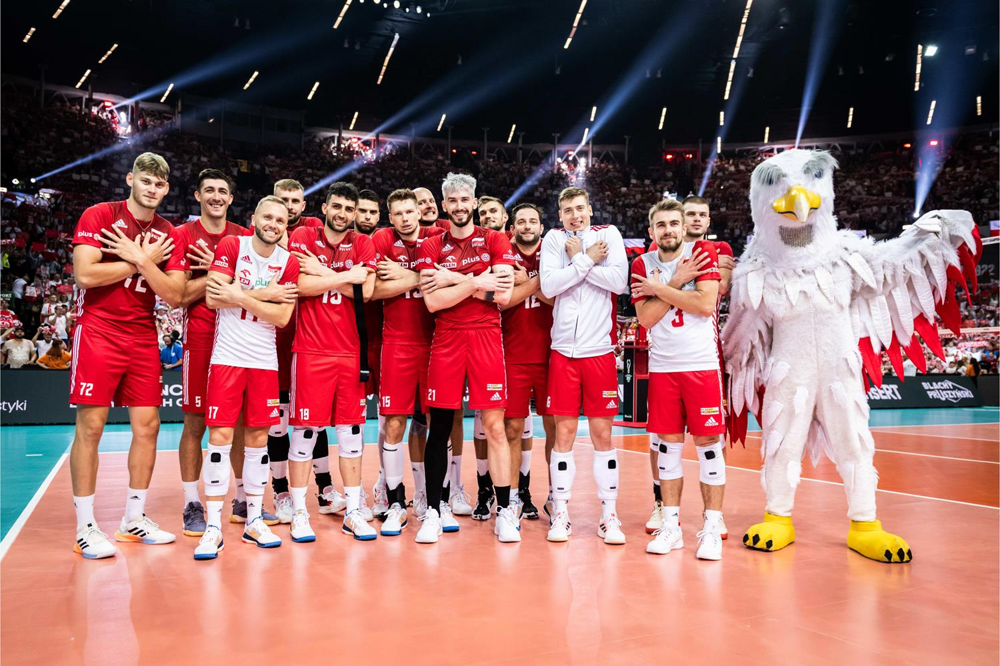

Siatkówka sport drużynowy.
Podczas gry na jednej połowie boiska może być 6 osób czyli łącznie może grać 12 osób w jednym meczu. Podczas treningu można zintegrować sie z ludzmi zawiązywać nowe przyjaźnie.
Piłka siatkowa wymaga dużej aktywności fizycznej ale nie tylko poprawi skupienie oraz rozwija. Reprezentacja polski
w piłce siatkowej osiąga ogromne sukcesy np. Polacy zajęli 2 miejsce na olimpiadzie w Paryżu w 2024 roku niestety przegrywając finał. Wiec jeśli chcesz być jak Bartosz Kurek nie leż w łóżku i zacznij grać w siatkówkę.
